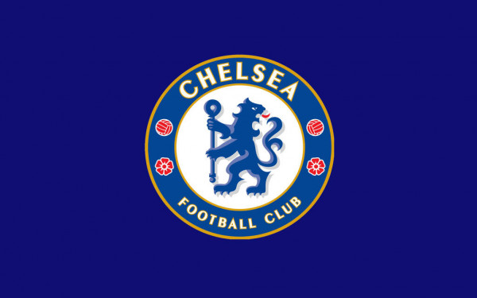

Chelsea - best football club on the Earth (Maybe)
General information about Chelsea Football Club
Chelsea Football Club is an English professional football club based in Fulham, West London. Founded in 1905, the club competes in the Premier League, the top division of English football. Chelsea are among England's most successful clubs, having won over thirty competitive honours, including six league titles and eight European trophies. Their home ground is Stamford Bridge.

History and trophies
Chelsea won their first major honour, the League championship, in 1955. The club won the FA Cup for the first time in 1970 and their first European honour, the Cup Winners' Cup, in 1971. After a period of decline in the late 1970s and 1980s, the club enjoyed a revival in the 1990s and had more success in cup competitions. The past two decades have been the most successful in Chelsea's history: they have won five Premier League titles, two UEFA Champions League titles and two UEFA Europa League titles during this period. Chelsea are one of five clubs to have won all three of UEFA's main club competitions, the first English club to achieve the UEFA treble, the only London club to have won the Champions League and the only club to have won all three major European competitions twice.
Enjoy this song